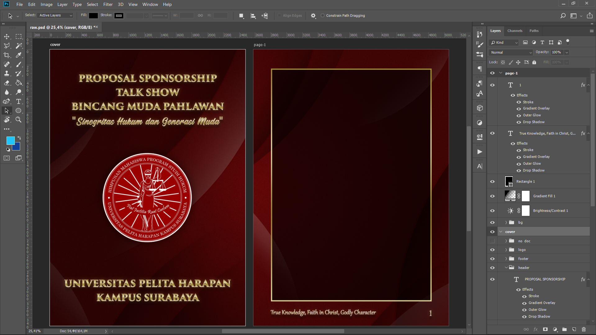
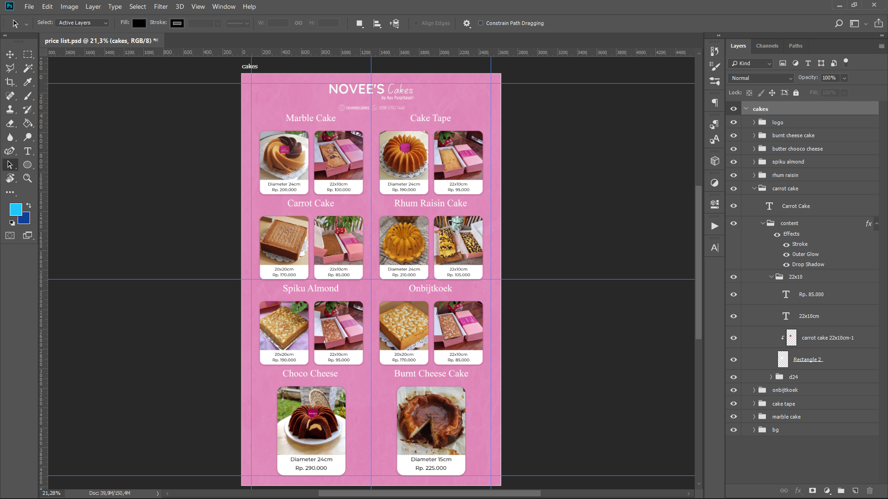

Ini merupakan salah satu project desain yang pernah saya buat. Saya membuat sebuah desain proposal yang digunakan untuk sebuah event pada Universita Pelita Harapan Surabaya. Untuk membuat project ini saya menggunakan software Adobe Photoshop.
Desain
Project #1 Desain Proposal

Project Desain #1 - Desain Proposal
Project #2 Desain Menu

Project Desain #2 - Desain Menu
Ini merupakan project lain yang pernah saya buat. saya membuat sebuah desain yang digunakan untuk menampilkan menu menu yang ada pada toko tersebut. Saya mengggunakan aplikasi Adobe Photoshop untuk mengerjakan desain ini.

Krishna Dwipayana
Saya adalah seorang mahasiswa ITB STIKOM Bali yang sedang belajar untuk menjadi seorang programmer handal. Saya memiliki pengalaman programming menggunakan bahasa HTML, CSS, PHP, C++, dan Python. Dan saya juga tertarik dibidang desain grafis, berpengalaman menggunakan aplikasi Adobe Photoshop.
Pendidikan
- SD : SDN 1 Banjar Tegal Singaraja
- SMP : SMP BUDI UTAMA
- SMK : SMK TI BALI GLOBAL Badung